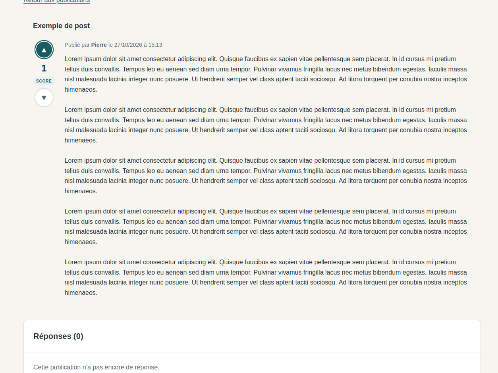
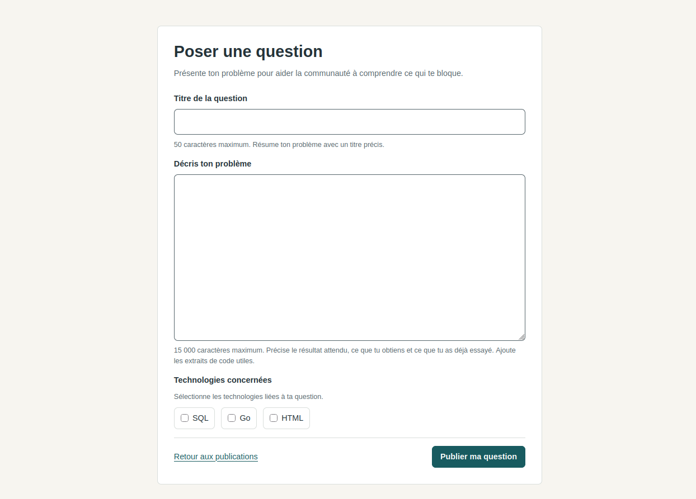

Choisir la base de données
Choisir une base de données adaptée à un projet étudiant.
Solution apportée
Utilisation de SQLite, adaptée aux besoins du projet étudiant.
PROJET 01 / PROJET ÉTUDIANT
Un espace d’échanges et d’entraide entre développeurs de tout niveau.
[À COMPLÉTER : date du projet]
APERÇU DU PROJET
Ouvrir une capture en grand dans un nouvel onglet.

La page d’accueil présente le forum et l’accès aux publications.

Un post de démonstration, les commandes de vote et la zone réservée aux réponses.

Le formulaire permet de décrire un problème et de sélectionner les technologies concernées.
01 / INTENTION
Forum est un projet étudiant réalisé en groupe. Son objectif est de créer un espace où des développeurs de tout niveau peuvent présenter un problème et solliciter l’aide des autres membres.
02 / DISPONIBLE
03 / MON RÔLE
04 / RÉSOLUTION
Choisir une base de données adaptée à un projet étudiant.
Utilisation de SQLite, adaptée aux besoins du projet étudiant.
Gérer les sessions des membres.
Mise en place d’un gestionnaire de sessions côté serveur, avec des fichiers JSON.
Protéger les mots de passe enregistrés.
Hachage des mots de passe avec bcrypt avant leur stockage dans la base de données.
05 / RÉSULTAT
Le forum permet aux membres de communiquer et de s’entraider autour de leurs questions de développement.